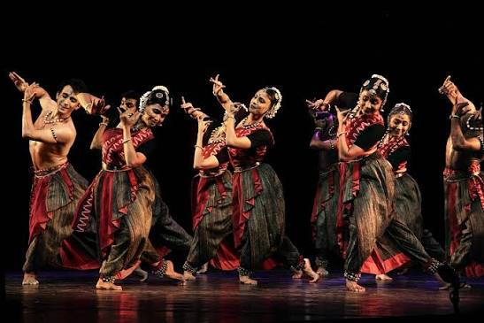

Bharatnatyam is one of the oldest and most famous forms of Indian classical dance, originating in the temples and royal courts of Tamil Nadu in southern India.
The name is derived from the Sanskrit words Natyam(dance) and an acronym combining bhavam(expression/feelings), ragam (melody), and talam (rhythm).
To learn more about the artform visit: Bharatnatyam